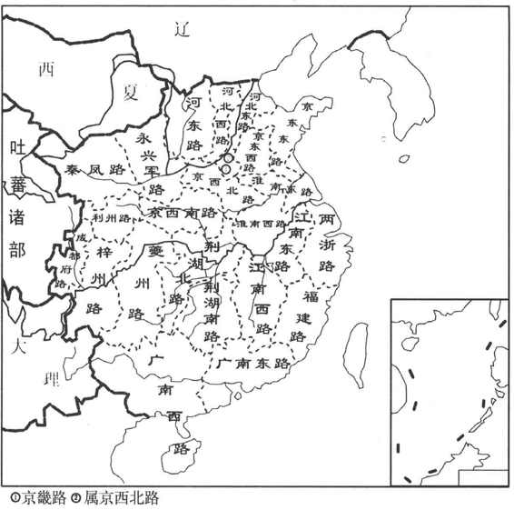

宋太祖赵匡胤建立宋朝以后，为了加强中央集权的专制统治，避免藩镇割据的局面重演，他先是将节度使的兵权彻底解除，然后又把节度使驻地以外兼领的州——当时借用西汉初年诸侯王国属郡的名称而叫做支郡，由中央政府直接统辖。同时由中央派遣文官出任地方官——知州，负责管理各州事务，但是仍然保留了原来各州的州刺史。知州的全名是权知军州事，意思就是暂时负责该州的军民事务，其实这一职务是一个固定的官职，只不过当时为了让那些节度使们易于接受而在名称上作了点花样，等到后来州刺史被废掉，这一名称中的“权”字也就省去了。知州每三年更换一次，直接对中央负责，向朝廷奏事，不再听命于地方上的节度使。至于县一级政区的官员的情况，也与州类似，中央政府派遣中央官员担任知县而用来代替原来的县令。后来，为了防止知州在地方上的权力过大，又设置通判作为知州的副手，让他们彼此之相互牵制，以便起到分知州权力的目的。
在把各地节度使所统领的各州收归中央后，宋太祖本想由中央政府直接来控制州与县，实行行政区划的二级制。但是在州这种统领县的一级政区数目很多的情况下，中央政府根本无法进行有效的管理。后来，宋太祖从唐代转运使的设置中得到启发，把这个临时性的差遣变成了固定的官职，让转运使负责征收和转运地方上的水陆两路财赋。由于要转输，就需要与交通路线发生联系，所以宋代统治者又按照全国的地理形势，重新划分，让这些转运使分路而进行管理，这样，在州之上便形成了新的一级行政区划——路。
因为转运使拥有地方军、民、财、刑大权，并辖有幅员广阔的区域——路，这无疑构成了一种潜在的割据力量。于是为了分夺转运使的权力，宋朝统治者又分别设立了负责掌管一路司法、刑狱和监察的提点刑狱司，负责储备粮食平抑物价的提举常平司和掌管一路的兵民之事的安抚使司。除安抚使司（简称为帅司）之外，转运使司、提点刑狱司、提举常平司通称为诸监司，又分别简称为漕、宪、仓三司。
在地域上，这些监司的管辖区域虽然都叫做路，但是各监司的路并不完全一致，而是互有交叉，在转运使司看来是一路的，在提点刑狱司却可以是两路，在安抚司则又可以是四路，甚至是六路。另外，即使有两司路在所辖领域上完全吻合，其治所也会有意地被人为安排在两个不同的地方，从而让他们形成各自独立的权力管辖范围。
宋朝中央政府就是利用以上这些办法，让各监司彼此之间相互牵制与制约，加之让路之下的各州依然保持直接向中央奏事的权力，这样就使路不能成为严格意义的在州之上的一级政区，从而收到有效控制地方、加强中央集权的效果。
总体来说，虽然从权力分配的角度来看，宋代实行的是二级半或者是虚三级，但如果从行政区划的角度来说，宋代实行的是路—州—县三级制。
北宋时期，路的划分以转运使司为主，初期路的分合极不稳定，省并频繁。到了太宗至道三年（997），才将全国定分为15路。后来，又有所分析，真宗时分为18路，神宗变成了23路，到徽宗崇宁四年（1105），增加到了24路。（图2—3）上述所分的这些路数，都是专指转运使司路而言的，至于宪司、帅司的分路则与之不同。如河北、陕西在当时是边防重地，与辽和西夏分别接壤，因此在河北的两个转运使司路又分设了四个安抚使司；在陕西的两个转运使司，又分设了六个安抚使司。

图2-3 北宋二十四路示意图
宋朝在路之下的二级政区有府、州、军、监四种，其下各自辖县。府、州的名称承袭的是唐朝的制度。府就是地位特殊的州，又细分为京府（首都或者是陪都的所在地）与次府（与皇帝的行为有关的州）二种。
军与监又分成两类：一类直属于路，与府、州同级；一类隶属于府、州，与县同级。宋时从边地到内地，都设有军，目的是为了边境的防御与内地的治安。统领县的军，地位等同于下州。如果其政治地位提高，也可能升为州；如果州的政治地位下降，也可以退而变成军。监在五代时期，是为了管理矿冶、铸钱、牧马、盐产区而设立的专门机构，宋朝时期兼管民事，也成为正式的行政区划。统县一级监的地位比同级的军的地位要低，如果这一级的监的地位提高了，也可以升为统县的军。
据《元丰九域志》记载，宋神宗元丰三年（1080），全国共有府14，州242，军37，监4。
唐朝末年，契丹在今天东北内蒙古一带兴起。938年改国号为辽。983年，辽圣宗复国号为契丹。1066年，兴宗复称辽。到1125年，天祚帝为金兵所擒，辽亡。
辽代的地方行政制度与区划，基本上承袭了唐代的制度，从太宗时期开始制定，到圣宗以后趋于完备。辽以所设立的上、东、中、南、西五京为中心，分全国为五道，并以京号为道名，合称五京道。
辽在道下面的一级又分成府、州、军、城四类，这四类的再下面一级则是县。另外，在上京道、中京道与东京道内又设有“头下军州”，是诸王、外戚、公主的私州，不领县。再有，辽代对北方原游牧部族不采用中原王朝传统的州县制，分为部族、属国两类。依据《辽史·地理志》的记载，辽代有6府，156州、军、城，209县，52部族，60属国。
982年，党项首领李继捧降宋，宋太宗授以夏州刺史之职。后李继捧族弟继迁率部反宋，屡败宋兵，传子德明。1034年，德明子元昊建年号，1038年称帝，国号大夏，史称西夏。西夏定都兴庆府（今宁夏银川）。1227年，为蒙古所灭。
西夏地方行政区划分州、县两级。据《宋史·夏国传》记载，西夏后期共有22州。但实际上西夏所置州尚不止此数，现在有名可考的夏州就有36个。［9］另外，西夏又按其军事机构左、右两厢而在地域上分设12监军司，即12个军区，军司多以州治所在或其他军事要地为驻所。西夏在边防要地还有郡的设置，兼理军民。
1114年，辽的属部女真部族联盟长完颜阿骨打起兵反辽。次年，称皇帝，建国号金。1125年灭辽，1127年灭北宋。1234年，蒙、宋军破蔡州，金亡。
金灭辽之后，承袭了辽的五京（唯改辽的上京为北京，南京为燕京）。灭掉北宋以后，又将北宋的都城称作汴京。再加上金自己设立的都城上京，因此在金熙宗在位时（1135—1149），共有七京。
在地方行政制度上，金朝在其发祥地，仍然采取部族制度，但是在所占据的原来的辽、宋地区，则承继的是北宋的制度，分路而进行治理。金熙宗皇统二年（1142）时，共设有17路。金朝的路与宋代的路一样，也是分权而立，只是金设置的是都总管府（民政）、转运使司（财政）、提刑使司（司法监察）及统军使司（军事）四使。在路的区域划分上，都总管府、转运司及提刑司三路的分划也不完全相同。
金的各路下面统辖州与县，州一级政区又有散府、节镇州、防御州、刺史州、军的分别。还有隶属于上京路的蒲与、曷懒、速频、胡里改四路和隶属于东京路的曷苏馆、婆速二路，也是相当于州一级的政区，由于不领民户而只领猛安谋克（300户为一谋克，相当于一县，十谋克为一猛安，相当于一防御州），所以不叫府州而称为路。另外，上京、北京、西京等路又辖有边境诸部族。
根据《金史·地理志》的记载，章宗泰和五年（1208）共有19路，下领属散府9、节镇州36、防御州22、刺史州23、军16、县632。
南宋建立后，在地方最高一级行政区划上，仍然采取的是分设诸路的制度。南宋与金达成绍兴议和的第二年（1142），境内一共分成16路，每一路都设立了负责掌管该路兵民事务的安抚使司，这与北宋时期以转运使司为一路主要机构的情况，已有所不同。除去安抚使司路之外，南宋还设有转运使司与提点刑狱司，这两司的分路情况与安抚司的相同，只是它们的治所有时不在一地。南宋在路之下，也与北宋时期相同，设府、州、军、监四种，下各统县。唯独府的数目，南宋时期比北宋增加了一些。